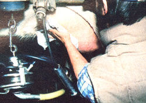
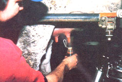
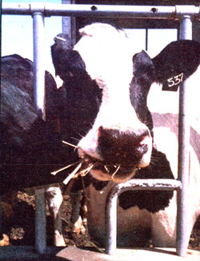
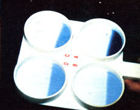
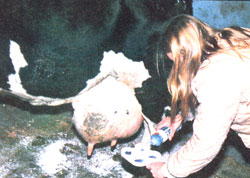

Part III in a series on dairy cow care by mother's homestead veterinarian;
Randy Kidd
In MOTHER NOS. 70 and 71, I presented "ten commandments" to help you raise your own healthy backyard dairy cow. And now that the basic methods of feeding and caring for of Bossie have been explained, it's time to turn our attention to the task of safeguarding the "liquid assets" produced by the bovine boarder.
CLEANLINESS IS THE KEY
To insure that your homegrown dairy products are tasty and safe to eat and drink, you should follow several simple principles of milk handling. The first (and most important) rule is to make certain the liquid doesn't become contaminated after it leaves the mammary gland. The best way to assure this is to keep the milking equipment and building scrupulously clean.
[1] Maintain a spotless milking area. You might want to paint the enclosure white, so you'll be better able to see-and eliminate-fly specks or spots of fecal matter.
[2] Keep strong odors out of the milking and milk storage areas.
[3] Use only sanitized pans, strainers, and bottles.
[4] Don't give your dairy animal onions, silage, cabbage, moldy grains and hay, or any other feed that can impart an "off" flavor to the milk.
[5] Make certain the beast herself is clean. Keep the hair around and above the mammary gland clipped.
[6] Always scrub your hands before you set to work.
[7] Clean the udder prior to milking. Use a paper towel soaked in a disinfectant solution to wash off any mud and dirt, then throw that towel away. Next, clean each teat in a dip cup filled with fresh disinfectant solution. (The containers and cleaning liquids can be purchased from farm suppliers or feed stores.)
[8] Finally, be sure that the milk itself is clean. Always strip the first three or four streams into a black cup and swirl the liquid around to look for the small chunks or clumps that can indicate mastitis (an inflammation or infection of the mammary gland).
KEEP A READY ROUTINE
There's more than one reason for washing your animals' udders carefully. Milk flow is brought on by the hormone oxytocin, the production of which is stimulated by massaging the udder and performing other premilking routines that the animal is accustomed to . . . such as (noisily) scrubbing out the milk pail.
It'll take from 45 to 90 seconds after the stimulation begins to produce a milk flow, and the hormone's effect lasts only eight minutes. The milking process should thus be finished within little more than eight minutes after you wash Bossie's udder.
When you're done, dip each teat once again in fresh disinfectant. This procedure leaves a drop of solution at the end of the teat canal to help keep out infections.
Dairy animals must be milked at least twice a day, allowing about 12 hours between sessions. If you milked three times a day, you could likely increase production by 10 to 20%, but the additional labor and time involved would have to be weighed against the value of the extra milk
MORE ON MASTITIS
Mastitis can occur in any dairy animal, including goats (contrary to what many doe owners believe). The disease is caused by a variety of organisms . . . bacteria, fungi, and possibly viruses. It can be triggered by something as seemingly inconsequential as a bump to the udder, which can lead to inflammation and eventual infection. Cuts, bruises, cold, dirt, or stress may also leave the udder vulnerable to the invasion of mastitis-causing mica, organisms.
On the other hand, proper milking techniques can help prevent the disease. The cleaner your cow's environment, the less chance there is of introducing mastitis-causing organisms into the udder. The last little teat dip in disinfectant-recommended above-will make it difficult for such "bugs" to enter.
Extra care in the selection of your critters will help prevent mastitis as well. A cow (or doe) with an udder that's carried tightly up against the flank (one with strong suspensory ligaments! will suffer a lot less udder banging and bruising than will an anim al with a pendulous, low-slung bag. And the less trauma the wil der endures, the less chance there will be for infection to occur.
THE CMT AND THE SCC
Severe mastitis can be identified by clumps in the milk (actually fibrous masses of infection-fighting white blood cells) but evidence of milder cases` isn't always visible. There's a simple examination, however-called the California mastitis test (CMT)-that helps bring any cells present together, to make them detectable in less advanced cases.
The CMT uses a white paddle-shaped device, which has attached cups, and a blue indicator liquid. A stream of milk from each teat is collected in a cup, after which a few drops of the indicator are added. The examiner simply swirls the two substances together, then tips the paddle slightly so that the milk slowly runs to one side. If white cells are present, they'll show up as clumps, easily seen against the blue color.
Another mastitis screening procedure is the somatic cell count (SCC). Performed by the Dairy Herd Improvement Association (DHIA), the test provides a count of the somatic cells-white blood cells and epithelial cells, for example-present in the milk.
An excess of somatic cells in the milk might be an indication of mastitis. However, some epithelial cells are continually sloughed off into the milk produced by any animal, and the "normal" quantity will vary according to the stage of lactation and the age of the beast. Your herd's DHIA records should help you determine whether a critter's cell count is normal or too high.
A CHECK PROGRAM
Take the following steps to keep a close watch for mastitis in your dairy animals.
[1] Swirl the first few streams of milk around in a black cup every time you milk, to check for evident mastitis.
[2] Periodically use the California mastitis test to uncover any less obvious cases. (A general guideline would be to perform the CMT once a month for nonproblem herds, once a week for problem herds, and once a day for problem individuals.) If your DHIA records provide a somatic cell count, compare your cows to their norms. When an animal scores higher, you should assume that she's contracted the ailment.
[3] Once mastitis has been diagnosed, feel the animal's udder. If it's hot, call the vet immediately. Should the udder feel only normally warm, though, simply milk the cow out every two or three hours for a total of 72 hours. (Discard the milk or-in light cases-feed it to your pigs.) Many cases of mastitis can be cured without the use of antibiotics by merely emptying the udder as often as possible and letting Bossie's immune system work its own magic. (However, if the repeat CMT is still positive after three days, call your vet.)
You can increase disease resistance in the udder by giving all cows a two-month layoff between lactations. The vacation will give their milk-producing systems a chance to recuperate and regenerate.
PREPARING THE MILK FOR CONSUMPTION
You know, then, that your cow is udderly healthy . . . and she's just given you a bucketful of fresh milk. What should you do to guarantee that the beverage will be fresh and tasty for the day's meals?
Well, once you've got the liquid into a bottle or pan, cool it-as rapidly as possible-to 40°F . . . to insure a longer shelf life and a better flavor.
After chilling it, you may want to pasteurize the milk. This process will kill most of the disease-carrying bugs that could affect humans. There are two ways to go about the task. One is to heat the milk to 165°F for 20 seconds (actually, you just bring it to 165°F and then shut off the burner) .. . the other is to warm the milk to 145°F and hold it at that temperature for 30 minutes. Be sure to use stainless steel pans and to stir the milk constantly with a stainless steel spoon while it's heating. (Copper, iron, or chipped enamel pots-and metal thermometers-may give the milk an "off" flavor.) When the time is up, quickly cool the liquid to 60°F, and store it at 40°F.
Pasteurization and animal testing have greatly reduced the incidence of brucellosis and tuberculosis in this country, but it's still wise to exercise caution. Whether you consume raw or pasteurized milk from your homestead animal, test the cow (or goat) annually for both diseases.
AND THAT'S NOT ALL
Naturally, in order to keep your dairy cow producing milk on a regular cycle, it's necessary to breed her every year. In the accompanying sidebar, I'll explain the method often used today to guarantee both new offspring and another year's supply of fresh, wholesome homegrown milk.
Artificial Insemination
Artificial insemination (AT)-the process of collecting live sperm from a male and introducing them into a female's reproductive tract at the proper time to produce offspringwas first researched back in 1783 by a man named Lazzaro Spallanzani, who conducted experiments with dogs in order to perfect the technique.
The first commercial AI organization in this country didn't begin operation until 1938-many years after the practice was instigated in Europe-but today, more than a third of all dairy calves are conceived by this method. Goats, dogs, pigs, and horses are also bred by AI, though not so extensively as are cattle.
AI can be your best bet, too, whether your herd is large or small. For instance, besides profiting from the relatively low cost involved (compared to the expense of feeding and maintaining a bull), the would-be breeder can pick a sire from the best of stock, without having to consider how far away the male animal may actually be. Furthermore, many diseases associated with the reproduction process can be controlled, and often eliminated, by using AI.
Perhaps its greatest advantage, though, is that AI extends the use of service by superior bulls. A sire that's proved capable of transmitting desirable traits to his offspring can thus be mated to thousands of cows.
HOW IT'S DONE
The semen is selected by using an artificial vagina (a rigid tube with an inner rubber sleeve that's been warmed with water and lubricated). The bull is tricked into mounting a "teaser" animal-usually a steer-and an attendant directs the bull's penis into the tube and traps the ejaculate. Sperm is gathered once or twice a week, depending on the weather and the bull's disposition.
A healthy, vigorous bull will produce from 300 million to two billion sperm cells in each milliliter of a normal five- to six-milliliter ejaculate. Ten million active sperm cells are considered an adequate number for one insemination, and, generally speaking, 70% of the sperm cells in a healthy ejaculate will be motile.
Immediately after collection, both the number of sperm and their motility are evaluated. Then, depending on the count of healthy sperm per milliliter, the ejaculate is diluted to produce the desired concentration of sperm cells. The diluted semen is placed in small ampules or straws and is quick-frozen for later use. Special metal canisters are necessary for storage, since the semen is kept in a liquid nitrogen refrigerant at temperatures far below freezing (-320°F ). You might be surprised to learn that calves have been born from sperm which has been stored this way for over nine years.
IMPREGNATION
When a cow comes into heat, an inseminator ( call your county extension agent for information on available A1 service) will visit the farm and introduce the semen into the cow's uterus. He or she will locate the correct placement by inserting a gloved hand into the animal's rectum and manipulating the cervix until a catheter can be gently moved into place through the vagina. Once the catheter is in position, the operator pushes the plunger on a syringe to deposit the sperm.
The success rate of AI averages about 70%. This ratio of conceptions to inseminations will vary according to the bull used and the health of the cow's reproductive tract.
Have your vet stop by between 45 and 60 days after the insemination to palpate the cow for pregnancy . . . and-at the same time-recommend a good vaccine and parasite-control program for your herd.
|
 |
 |
 |
|
 |
 |
|